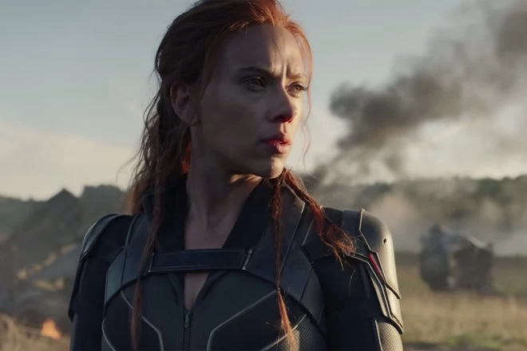

ULTIMAS NOTICIAS
LOKI(LA SERIE)
Loki (serie de televisión) Fecha de lanzamiento: 9 de junio de 2021 (en Disney +) ¡Loki de Tom Hiddleston está regresando! Disney reveló recientemente que está adelantando la fecha del estreno de Loki con un video con el propio Loki. Es importante recordar que, en esta nueva serie, no veremos al Loki que murió tratando de salvar a su hermano en Infinity War. En cambio, el programa se centrará en el Loki que escapó después de la batalla de Nueva York, durante las aventuras de viaje en el tiempo en Endgame. En otras palabras, una versión de Loki que no ha comenzado su giro hacia los buenos y está recién salido de su mayor derrota.

VIUDA NEGRA (LA PELICULA)
Fecha de estreno: 9 de julio de 2021 (tanto en cines como en Disney + Premier Access) Sabemos que el personaje Black Widow se sacrifica en Endgame para obtener Soul Stone y derrotar a Thanos, pero eso no ha impedido que Marvel siga adelante con su personaje en el MCU. Una película en solitario de Black Widow explorará el misterioso pasado del personaje. Está ambientado entre los eventos de Captain America: Civil War e Infinity War, y tiene a David Harbour coprotagonizada junto a Scarlett Johansson como la respuesta de la Unión Soviética al Capitán América, Red Guardian.
THE ETERNALS (LA PELICULA)
Fecha de lanzamiento: 5 de noviembre de 2021 Los Eternos son una rama de la humanidad y son efectivamente inmortales, y cada uno tiene diferentes tipos de poderes. Dependiendo de la serie de cómics que estés leyendo, los personajes pueden ser destruidos hasta el punto de que no queden nada más que moléculas y, sin embargo, aún pueden regenerarse. Eran los protectores originales de la Tierra y, a menudo, luchan contra los Deviants, que tienen poderes similares a los de los Eternos.

SPIDERMAN NO WEY HOME (LA PELICULA)
Fecha de lanzamiento: 17 de diciembre de 2021 La tercera película de Tom Holland Spider-Man se perfila como una maravilla. Ya hemos visto informes de que Dr. Strange, interpretado por Benedict Cumberbatch, se incluyó en la película. Sin embargo, la noticia más emocionante es que Toby Maguire y Andrew Garfield pueden repetir sus propias versiones de Peter Parker, creando una posible versión de acción real de la exitosa película animada Into The Spiderverse. También hay rumores de que también podrían aparecer villanos de películas anteriores de Spiderman, como Electro de Jamie Foxx y Otto Octavius de Alfred Molina.